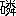

茅舎句集が出るといふ話をきいた時分に、私は非常に嬉しく思つた。親しい俳友の句集が出るといふ事は誰の句集であつても喜ばしいことに思へるのであるけれども、わけても茅舎句集の出るといふことを聞いた時は最も喜びを感じたのである。それはどうしてであるかといふ事は自分でもはつきり判らない。
茅舎君は嘗ても言つたやうに、常にその病苦と闘つて居ながら少しもその病苦を人に訴へない人である。生きんが為の一念の力は、天柱地軸と共に、よく天を支へ地を支へ茅舎君の生命をも支へ得る測り知られぬ大きな力である。
茅舎君は真勇の人であると思ふ。自分の信ずるところによつて急がず騒がず行動してをる。
茅舎君は雲や露や石などに生命を見出すばかりでなく、鳶や蝸牛などにも人性を見出す人である。
露の句を巻頭にして爰に収録されてゐる句は悉く飛び散る露の真玉の相触れて鳴るやうな句許りである。
昭和九年九月十一日
ホトトギス発行所
高浜虚子
露径深う世を待つ弥勒尊
夜店はや露の西国立志編
露散るや提灯の字のこんばんは
巌隠れ露の湯壺に小提灯
夜泣する伏屋は露の堤陰
親不知はえたる露の身そらかな
白露に阿吽の旭さしにけり
白露に金銀の蠅とびにけり
露の玉百千万も葎かな
ひろ／″＼と露曼陀羅の芭蕉かな
白露をはじきとばせる小指かな
白露に乞食煙草ふかしけり
桔梗の露きび／＼とありにけり
桔梗の七宝の露欠けにけり
白露に鏡のごとき御空かな
金剛の露ひとつぶや石の上
一聯の露りん／＼と糸芒
露の玉蟻たぢ／＼となりにけり
就中百姓に露凝ることよ
白露の漣立ちぬ日天子
玉芒みだれて露を凝らしけり
玉芒ぎざ／＼の露ながれけり
白露に薄薔薇色の土龍の
白露が眩ゆき土龍可愛らし
日輪に露に土龍は掌を合せ
露の玉ころがり土龍ひつこんだり
秋暑し榎枯れたる一里塚
新涼や白きてのひらあしのうら
そこはかと茶の間の客や秋の暮
塔頭の鐘まち／＼や秋の雨
秋風や薄情にしてホ句つくる
秋風や袂の玉はナフタリン
めの字絵馬堂一面に秋晴るゝ
ちら／＼と眼に
二三点灯りし森へ月の道
この頃や寝る時月の手水鉢
僧酔うて友の頭撫づる月の縁
和尚また徳利さげくる月の庭
月明し煙うづまく瓦竈
葛飾の月の田圃を終列車
月の道踏み申す師の影法師
森を出て花嫁来るよ月の道
筏衆ぬる
釣人に鼠あらはれ夕月夜
明月や碁盤の如き珠数屋町
葭切の静まり果てし良夜かな
白樺の霧にひゞける華厳かな
観世音おはす花野の十字路
釣人のちらりほらりと花野道
釣針をひさぐ一つ家花野道
秋の水湛へし下に湯壺かな
頬白や雫し晴るゝ夕庇
頬白やひとこぼれして散り／＼に
露の玉大きうなりぬ鵙猛る
猛り鵙ひう／＼空へ飛べりけり
御空より発止と鵙や菊日和
下り鮎一聯過ぎぬ薊かげ
蜩や早鼠つく御仏飯
蜩に十日の月のひかりそむ
蚯蚓鳴く御像は盲させ給ふ
蚯蚓鳴く六波羅蜜寺しんのやみ
蚯蚓鳴く人の子寝まる草の庵
放屁虫かなしき刹那々々かな
しんがりは鞠躬如たり放屁虫
放屁虫ヱホバは
行楽の眼に柿丸し赤や黄や
葡萄棚洩るゝ日影の微塵かな
亀甲の粒ぎつしりと黒葡萄
水満てし白き器に葡萄かな
茱萸噛めば仄かに渋し開山忌
紅葉谷の上に巍々たり御本山
石垣に固めし院の紅葉かな
院々の肉煮ゆる香や夕紅葉
草花やはしりがきする水塔婆
梵妻や芋煮て庫裡をつかさどる
芋腹をたゝいて歓喜童子かな
八方を睨める軍鶏や芋畑
芋の葉を目深に馬頭観世音
如是我聞大師は芋を石となしぬ
肥担ぐ汝等比丘や芋の秋
藪がしら自然薯の蔓たぐりそむ
自然薯の逃げて波うつ藪畳
自然薯の身空ぶる／＼掘られけり
水霜にまつたき芭蕉広葉かな
土砂降に一枚飛びし芭蕉かな
舷のごとくに濡れし芭蕉かな
明暗を重ねて月の芭蕉かな
一帳羅破れそめたる芭蕉かな
破芭蕉猶数行をのこしけり
耳塚の前ひろ／″＼と師走かな
短日の照し終せず真紅ゐ
山内にひとつ淫祠や小六月
大年の常にもがもな弥陀如来
しぐるゝや僧も嗜む実母散
湯ぶねより一とくべたのむ時雨かな
時雨るゝや又きこしめす般若湯
涙ぐむ粥あつ／＼や小夜時雨
夕粥や時雨れし枝もうちくべて
鞘堂の中の御霊屋夕時雨
しぐるゝや粥に抛つ梅法師
袖乞のしぐれながらに鳥辺山
時雨来と水無瀬の音を聴きにけり
かぐはしや時雨すぎたる歯朶の谷
通天やしぐれやどりの俳諧師
しぐるゝや目鼻もわかず火吹竹
酒買ひに韋駄天走り時雨沙弥
しぐるゝや笛のごとくに火吹竹
梅擬つら／＼晴るゝ時雨かな
しぐるゝや日がな火を吹く咽喉仏
しぐるゝや
御僧や時雨るゝ腹に火薬めし
時雨来と栴檀林にあそびをり
しぐるゝや沙弥竈火を弄ぶ
小夜時雨開山さまはおきて居し
鼠らもわが家の子よ小夜時雨
時雨鳩わが肩に来て頬に触れ
花を手に浄行菩薩しぐれをり
ぎつしりと金看板や寒の雨
雪模様卒都婆の垣をかためけり
牡丹雪林泉鉄のごときかな
雪晴の障子細目に慈眼かな
しん／＼と雪降る空に鳶の笛
月の雪あを／＼闇を染めにけり
物陰に月の雪あり一とちぎれ
白雪を冠れる石のかわきをり
一枚の餅のごとくに雪残る
渦巻いて芒は雪を被り居り
誰か来るみつし／＼と雪の門
雪の上どつさり雪の落ちにけり
霜ばしら選仏場をかこみけり
霜柱土階の層をなしにけり
霜柱こゝ櫛の歯の欠けにけり
霜柱甘藷先生かくれけり
霜柱ひつこぬけたる長さかな
霜柱そだちし石のほとりかな
凩の中に灯りぬ閻魔堂
寒月の通天わたるひとりかな
寒月や見渡すかぎり甃
寒月や穴の如くに黒き犬
鐘楼や城の如くに冬の山
氷る夜や抱きしめたる菩提心
氷る夜の文珠に燭をたてまつる
狐火に俥上ながらの添乳かな
達磨忌や僧を眺めて俳諧師
病僧やかさりこそりと年用意
欄間より小夜風通ふ蒲団かな
ちび／＼の絵筆また捨て日向ぼこ
前住の貼りしつくろふ助炭かな
日の障子とても助炭の静けさに
笹鳴や呪文となへて子守沙弥
いちはやき旭は輪蔵に寒雀
銀杏ちる童男童女ひざまづき
寒椿線香の鞘はしりける
枯薊心頭の花燃えにけり
うちなびき音こそなけれ枯芒
たら／＼と日が真赤ぞよ大根引
大根馬菩薩面して眼になみだ
絃歌わく二階の欄も干大根
大根引身を柔かに伸ばしけり
大根馬かなしき前歯見せにけり
初春の二時うつ島の旅館かな
初凪の岩より舟に乗れと云ふ
初富士や石段下りて稚児ヶ淵
初富士や崖の鵯どり谺して
春寒やお蝋流るゝ苔の上
春寒やお滝様とて竹の奥
暖かや飴の中から桃太郎
麗かや砂糖を
麗かや松を離るゝ鳶の笛
春暁や先づ釈迦牟尼に茶湯して
春暁や音もたてずに牡丹雪
春昼や人形を愛づる観世音
春宵や光り輝く菓子の塔
春の夜や寝れば恋しき観世音
春の夜やちよろりと出づる御蝋番
春の夜や女に飲ます陀羅尼助
春の夜の秋より長し草の庵
行春や茶屋になりたる女人堂
九品仏迄てく／＼と春惜む
子守沙弥心経うたふおぼろかな
朧夜の塔のほとりに影法師
骨壺をいだいて春の天が下
春天に鳩をあげたる伽藍かな
又立ちし鳩の羽音や花曇
春雷や牡丹の蕾まつ蒼に
春泥に子等のちんぼこならびけり
涅槃会に吟じて花鳥諷詠詩
眉描いて来し白犬や仏生会
甘茶仏杓にぎはしくこけたまふ
灌仏や鳶の子笛を吹きならふ
草摘に光り輝く運河かな
草摘の頭光る子負ひにけり
草摘の負へる子石になりにけり
御本山二十重の畦を塗りかたむ
広縁や囀り合へる右左
囀や銀貨こぼれし頭陀袋
囀や拳固くひたき侍者恵信
囀の清らに覚めぬ僧房夢
燕や烈風に打つ白き腹
揚雲雀花の庵の厨より
啓蟄を啣へて雀飛びにけり
鳴く蛙探海燈はさかしまに
漣の中に動かず蛙の目
蛙の目越えて漣又さゞなみ
こま／″＼と白き歯並や桜鯛
桜鯛かなしき眼玉くはれけり
水門に少年の日の柳鮠
蜂の尻ふわ／＼と針をさめけり
蜆舟石山の鐘鳴りわたる
菜の花の岬を出でゝ蜆舟
梅咲いて母の初七日いゝ天気
梅咲いて鉄条網の倒れあり
椿道綺麗に昼もくらきかな
桃の里家鴨に藍を流しけり
木蓮の落ちくだけあり寂光土
花隠れ呪文きこゆるお滝様
初花や竹の奥より朝日かげ
花明り蛙もなかぬ心字池
山高みこのもかのもに花の雲
花の雲鳩は五色に舞ひあそぶ
蹶ちらして落花とあがる雀かな
花吹雪滝つ岩ねのかゞやきぬ
藤浪の松より竹へ清閑寺
西方の日に飛ぶことよ銀杏の芽
銀杏の芽み空に飛べば白鳩も
銀杏の芽分ン厘ン具ふ形かな
大銀杏無尽蔵なる芽ふきけり
銀杏の芽こぼれて伝ふ乳房かな
岨の道くづれて多羅の芽ふきけり
花大根黒猫鈴をもてあそぶ
そゞろ出て蕨とるなり老夫婦
虎杖を啣へて沙弥や墓掃除
生魚すぐ飽き萵苣を所望かな
ふか／″＼と森の上なる蝶の空
泣き虫の父に眩しや蝶の空
蝶の空七堂伽藍さかしまに
蝶々にねむる日蓮大菩薩
一蝶に雪嶺の瑠璃ながれけり
雪嶺に条紋の蝶かず
雪嶺を落ち来たる蝶小緋縅
紛々と蝶むらがりぬ尽大地
月涼し僧も四条へ小買物
金銀の光涼しき薬かな
白日のいかづち近くなりにけり
蝶の羽のどつと流るゝ雷雨かな
迎火や風の葎のかげによせ
迎火や露の草葉に燃えうつり
迎鐘ひくうしろより出る手かな
金輪際わりこむ婆や迎鐘
からくりの鉦うつ僧や閻魔堂
閻王や菎蒻そなふ山のごと
御宝前のりだし給ふ閻魔かな
菎蒻に切火たばしる閻魔かな
日盛や綿をかむりて奪衣婆
大どぶにうつる閻魔の夜店の灯
侍者恵信糞土の如く昼寝たり
昼寝比丘壁画の天女まひあそぶ
昼寝覚うつしみの空あを／＼と
繭を掻く町の外れに温泉寺
土手越えて早乙女足を洗ひけり
定斎売畜生犬の舌垂るゝ
玉巻きし芭蕉ほどけし新茶かな
夏氷鋸荒くひきにけり
飴湯のむ背に負ふ千手観世音
翡翠の影こん／＼と溯り
幾重ね金魚の桶をひらきけり
蛇消えし草葉のかげは濃紫
万筋の芒流るゝ螢かな
螢火の瓔珞たれしみぎはかな
蟻地獄見て光陰をすごしけり
花合歓に蛾眉なが／＼し午後三時
花合歓の葉ごしにくらき蝶々かな
寒気だつ合歓の逢魔がときのかげ
総毛だち花合歓紅をぼかし居り
盧遮那仏若葉ぬきんで
水晶の念珠に映る若葉かな
桑の実や苅萱堂に遊びけり
若竹や鞭の如くに五六本
双輪のぼうたん風にめぐりあふ
月白し牡丹のほむら猶上る
散牡丹ぼうたんの葉に草の葉に
ぼうたんのまへに嶮しや潦
百合の蘂皆りんりんとふるひけり
真白な風に玉解く芭蕉かな
玉解いて芭蕉は天下たひらかに
青芒
横たはる西瓜の号はツエペリン
草じらみ袖振り合ふも句兄弟
伽羅蕗の滅法辛き御寺かな
新藷の既にあかきもうちまじり
もてなすに金平糖や麦の秋
麦埃赤光の星森を出づ
露涼し


迎火に合歓さん／＼と咲き翳し
生身魂ちゝはゝいますごときかな
聖霊の茄子の形となりにけり
鶯やいろはしるべの奥の院 寿山堂
大正十二年秋より昭和八年八月まで満十ヶ年虚子先生のホトヽギス雑詠に採録せられた句を集めた。ホトヽギスの三百三十二号より四百四十五号まで。
此の十年は自分の為に善い意味に於ても悪い意味に於ても十年一日のごとくであつた。其れは生来羸弱のゆゑに闘病寧日なきがごとく経過し乍らも亦、其れは山中に暦日なきがごとくであつた。其為自分は幸にも初発心時の熱情を無慙に喪失する機会を持つて居なかつたともいへよう。然し寧ろ今後こそ自分は花鳥諷詠の為に本当の信心を決定出来るのではないだらうか。
さういふ十年一日のごとき此の期間の作品は種々な理由で年代の順に並べる事を好まなかつた。たゞ四季に分類した丈で、震災の秋より出発したゆゑ秋を巻頭に置いた。
句集の句数は三百に限つた。其れは其数を何となしに愛するからであつた。
今、虚子先生の序文を頂いて無上な幸福な感じがする。本当に少年のやうに幸福な感じがする。
昭和九年九月十二日朝
川端茅舎
（昭和九年十月刊）